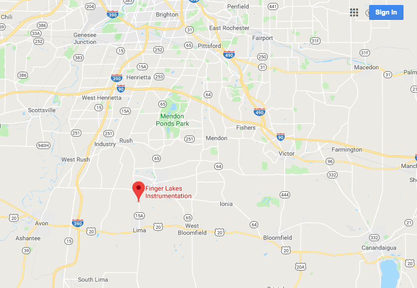

About Us
Finger Lakes Instrumentation LLC, New York, USA
FLI began operations in 1998 as a supplier of cooled CCD cameras for astronomical research. Today we operate from three facilities in two locations. Our Binghamton office is dedicated to production of Atlas focusers, CenterLine filter wheels, and High Speed Filter Wheels,, as well as software and mechanical engineering. Our two Lima facilities include a dedicated engineering facility and a state-of-the-art production facility. FLI supplies cameras to more than 50 countries for life science imaging, veterinary radiology, astronomy, forensics, transmission electron microscopy, and a wide range of other applications. Our on-site staff includes a talented group of mechanical, electrical, and software engineers. FLI Cooled CCD cameras and accessories are designed, built, and serviced in the state of New York, USA. We are a reliable supplier of cameras and accessories, and invite you to visit us at one of our facilities in New York.
